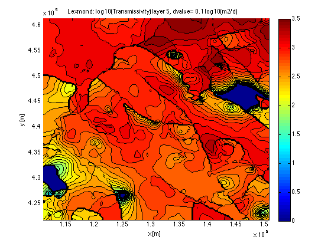

Analyzing output of the model (Part of NHI)
This file analyzes (or visualizes) the results of the flow model that was invoked by typing mf_setup at the command line. 3D visualization is applied to allow inspecting complex 3D models like the one here. The model in his example is a 40 by 40 km submodel of the National Hyrological Instrument for the center of the Netherlands, around Lexmond. The data used have been downloaded from the official site www.NHI.nu/bibliotheek. The model is steady state, uses the average HI-provided recharge and also uses NHI-provided year-averaged boundary conditions (stresses). Summer and winter stresses are also available but have not been used given the lack of transient recharge data.
TO 091011 120603 120816
Contents
- Loading the basename, model data and extra info if available
- Print size and center coordinates of the model
- Load and show the computed heads of the model
- Contour any values of the layers (head, transmissivities whatever)
- Show the specific vertical leakage downward in all layers
- Boundary conditions (stresses)
- Use zone budget to get budget overview
Loading the basename, model data and extra info if available
load('name.mat') % get basename stored in file name.mat load(basename); % load the mat file with the model arrays stored in mf_adapt.m load underneath % load extra information if available
Print size and center coordinates of the model
fprintf('Size of model is %.0fkm in both directions\n',diff(gr.xGr([1 end])/1000)); fprintf('Center of model in Rijksdriehoek Coordinates (Dutch National system)\n'); fprintf(' is x=%.0f y=%.0f km\n',mean(gr.xGr)/1000, mean(gr.yGr)/1000); [Lon,Lat]=rd2wgs(mean(gr.xGr),mean(gr.yGr)); %% In WGS coordinates fprintf('In WGS (i.e. Google Earth):\nLon(Easting)=%g\nLat(Northing)=%g\n',Lon,Lat);
Size of model is 40km in both directions Center of model in Rijksdriehoek Coordinates (Dutch National system) is x=131 y=442 km In WGS (i.e. Google Earth): Lon(Easting)=5.03619 Lat(Northing)=51.9625
Load and show the computed heads of the model
H=maskH(readDat([basename,'.HDS']));
Reading MODFLOW binary output file <<Lexmond.HDS>> verbose= 0
Scanning headers
finished, 7 records scanned
File contains the following:
Number of records in file : 7
Number of stress userPeriods: 1
Number of time steps : 1
Number of layers : 7
Number of rows : 159
Number of columns : 159
Maximum time in file " 1
Reading requested data ...
7 records read.
. 1 records in output struct.
This shows the model layers in 3D. The figure starts with the heads which are H(1).values or H.values because the model is steady state. The 7 NHI layers are shown with a wire mesh around the entire model. This The wire mesh is drawn for 3 sides (west, south and top), but other sides can be added with the buttons on the figure. Each side can be switched on and off at will. The elevation of the top mesh corresponds to the elevation of ground surface and that of the bottom mesh with the bottom of the system (layer 7 in the current NHI).
%h=showLayers(gr,'H.values',well,basename);
By clicking on the rotation tool in the toolbar, one can turn the model in 3D space.
To see the value of the colors, switch on the color bar in the toolbar.
If wells are not well visible, change their color using the switch box near the right bottom of the screen.
%h=showLayers(gr,'H.values',well,basename,'contours');
Contour any values of the layers (head, transmissivities whatever)
if exist('H','var'), gr.layerContours('Heads [m]' ,H(end).values,basename,'m'); end
for widely varying positive values like transmissivties, take the log10
if exist('TRAN','var'), gr.layerContours('log10(Transmissivity)' ,log10(TRAN ),basename,'log10(m2/d)'); end if exist('HK','var') , gr.layerContours('log10(Transmissivity)' ,log10(gr.DZlay.*HK ),basename,'log10(m2/d)'); end if exist('VCONT','var'),gr.layerContours('log10(Vertical hydr resistance)',log10(1./VCONT ),basename,'log10(d)'); end if exist('VKCB','var') ,gr.layerContours('log10(Vertical hydr resistance)',log10(gr.DZcbd./VKCB),basename,'log10(d)'); end

Show the specific vertical leakage downward in all layers
B= readBud([basename '.BGT']); % read budget file with computed cell by cell flows
Trying to read Lexmond.BGT as BINARY file...it works! Scanning 9 headers finished, 9 records scanned File contains the following: Number of records in file: 9 Number of stress periods : 1 Number of time steps : 1 Number of layers : 7 Number of Rows : 159 Number of columns : 159 Number of unique labels : 9 CONSTANTHEAD DRAINS FLOWFRONTFACE FLOWLOWERFACE FLOWRIGHTFACE HEADDEPBOUNDS RECHARGE RIVERLEAKAGE WELLS Reading the requested data ... Please wait while I'm getting the requested data ... ......... 1 records in output struct.
Compute specific vertical lekage as flowlowerface/cell area
VL = B(end).term{strmatchi('FLOWLOWERFACE',B(end).label)}./gr.AREA3;
show it in contours
gr.layerContours('Vert leakage [m/d]',VL(:,:,1:end-1),basename,'m/d');
Boundary conditions (stresses)
Stresser are lists with one line per cell. To show then spatically they are put on a 3D cell grid and shown with one color in each cell. Taking column 5 of the lists implies the specified head or elevation of the stresses
if exist('RIV','var'), gr.showStress('RIV',RIV,basename,1,5,'head'); end if exist('GHB','var'), gr.showStress('GHB',GHB,basename,1,5,'head'); end if exist('DRN','var'), gr.showStress('DRN',DRN,basename,1,5,'head'); end
Use zone budget to get budget overview
- show the overall budget. - see help zonebudget for options to fine-tune
zonebudget(B);
============================================
zoneBudget will be computed for entire model.
Budget [consistent model units] for period=1, itsp=1:
BUDGET FOR ZONE 1 -----IN----- ----OUT-----
total for CONSTANTHEAD = 0.00 -0.00
total for FLOWRIGHTFACE = 0.00 -0.00
total for FLOWFRONTFACE = 0.00 -0.00
total for FLOWLOWERFACE = 0.00 -0.00
total for WELLS = 0.00 178143.41
total for DRAINS = 0.00 1282207.13
total for RIVERLEAKAGE = 89670.58 -0.00
total for HEADDEPBOUNDS = 1.75 -0.00
total for RECHARGE = 1370678.27 -0.00
------------ ------------
total for ZONE 1 = 1460350.61 1460350.55
total net ZONE 1 = 0.06